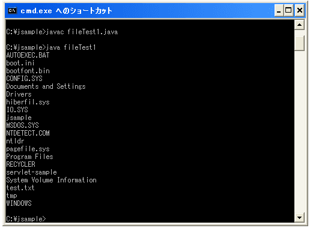
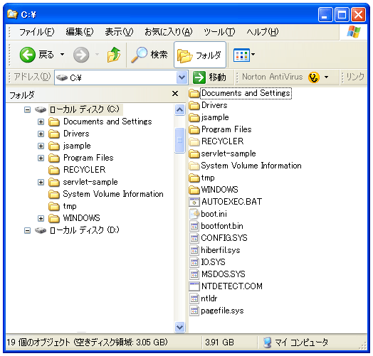

Fileクラス
Javaではファイルを扱うにはFileクラスを使います。まずはFileクラスについて見てみましょう。
まずは取り扱いたいファイルに対して1つのFileクラスのオブジェクトを対応させます。どのファイルを対象としているかを特定するには、ファイルが置いてある場所(ディレクトリ)とファイルの名前が必要になります。まずは絶対パスでファイル名を指定してみましょう。
File オブジェクト名 = new File(ファイル名);
対象とするファイル名をディレクトリの位置＋ファイル名の形で指定します。例えば下記のようになります。
File file = new File("c:\\tmp\\test.txt");
※Windowsの場合です。
これで「Cドライブ」にある「tmp」というディレクトリの中にある「test.txt」というファイルに対して、Fileクラスのオブジェクトである「file」を対応させました。例えば今後このファイルの内容を読み込んだり書き込んだりする場合に、先ほど作成したFileクラスの「file」オブジェクトを使って行うことができるようになりました。つまりFileクラスを使うことで、ローカルディスクにあるファイルをJavaで扱えるようにしてくれるわけです。
ちなみにファイル名を指定する時に、「c:\tmp\test.txt」ではなく「c:\\tmp\\test.txt」のように「\」を2つ重ねて記述します。これは文字列の中で「\」は特別な意味を持つ単語のため、特別な意味ではなく単なる「\」ですということを意味するため「\」を2つ重ねて「\\」と記述します。
絶対指定と相対指定
先ほどはファイルの場所をドライブの位置からの絶対指定で記述しました。ファイルの指定には絶対指定だけではなく、相対位置での指定も可能です。相対位置の場合は、このプログラムを記述しているJavaのファイルが置かれている位置を基準とします。
例えばプログラムファイルと同じディレクトリに対象のファイルがある場合には、下記のように記述します。
File file = new File("test.txt");
またプログラムファイルのディレクトリの中に「txt」というディレクトリがあり、そのディレクトリに対象のファイルがある場合には、下記のように記述します。
File file = new File(".\\txt\\test.txt");
ファイルとディレクトリ
Javaではファイルもディレクトリも同じものとして扱います。つまりディレクトリも1つのFileクラスのオブジェクトとして扱うことが出来ます。
例えば「Cドライブ」にある「tmp」というディレクトリをJavaで取り扱うためには下記のように記述します。
File file = new File("c:\\tmp\\");
では簡単なサンプルをひとつ試してみます。Fileクラスには"list"というメソッドを使うことでFileクラスのオブジェクトに含まれるファイルやディレクトリの一覧を取得することができます。Fileクラスのオブジェクトをファイルに割り当てた場合には出来ませんけど、ディレクトリに割り当てた場合、そのディレクトリの中にはファイルやサブディレクトリが含まれていると思います。その一覧を取得できるわけです。
サンプルプログラム
下記のサンプルでは「Cドライブ」のルートディレクトリ(つまりC:\のことです)に含まれるファイルやディレクトリ一覧を取得しています。(listメソッドの使い方は次のページ以降で詳しく見てみます)。
import java.io.File;
class fileTest1{
public static void main(String args[]){
File cdirectory = new File("c:\\");
String filelist[] = cdirectory.list();
for (int i = 0 ; i < filelist.length ; i++){
System.out.println(filelist[i]);
}
}
}
上記をコンパイルして実際に実行してみると下記のようになります。

C:\ドライブにあるファイルやディレクトリをエクスプローラーで実際に見てみると下記のようになります(普段表示しないようにしているシステムファイルも表示するようにしてあります)。

このようにFileクラスを使うことで、結構簡単にローカルディスクにあるファイルやディレクトリを扱うことが出来ます。
※サンプルプログラムの一番最初に「import ...」という記述がありますが、これはFileクラスを利用する時の呪文のようなものです。詳しく知りたい方は『importについて』を参照して下さい。
( Written by Tatsuo Ikura )

著者 / TATSUO IKURA
初心者～中級者の方を対象としたプログラミング方法や開発環境の構築の解説を行うサイトの運営を行っています。